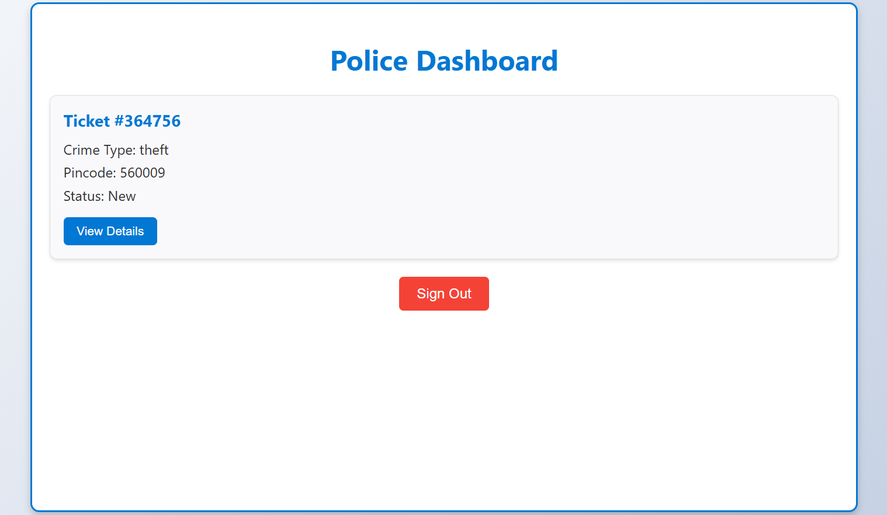
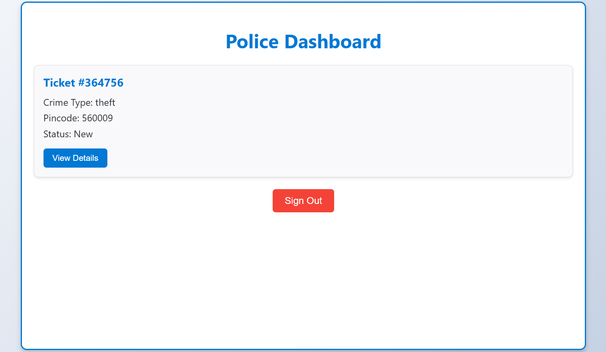

CIVILANS AS
POLICE
Step into the role of a community hero. Join hands with the police to create a safer, stronger society.
Learn moreStep into the role of a community hero. Join hands with the police to create a safer, stronger society.
Learn more

 


CAP (Civilians As Police) is a comprehensive platform designed to streamline the reporting and management of incidents, ensuring timely action and enhanced community safety. Whether it’s reporting a crime, tracking case status, or uploading vital evidence like images and audio recordings, CAP makes it simple and accessible for everyone.
"CAP: Bridging Communities and Authorities through AI." CAP leverages cutting-edge AI technology to revolutionize crime detection and prevention. By enabling civilians to actively contribute to public safety, CAP transforms traditional methods of law enforcement into a collaborative effort.
With the power of artificial intelligence, CAP processes images, videos, and voice inputs uploaded by users, automatically analyzing and detecting potential criminal activities. This ensures faster investigations and prevents valuable information from being overlooked.
Team Members
Ashwin Linu
Samyukth Dharmarajan
Surya D